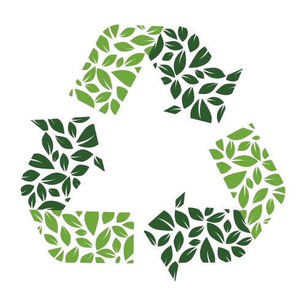

.jpg)
A ODS 15 busca proteger e restaurar os ecossistemas terrestres, promovendo o uso sustentável dos recursos naturais. Seu foco é combater o desmatamento, a perda da biodiversidade e a degradação do solo, garantindo um planeta saudável para as próximas gerações.
O objetivo do ODS 15 é proteger, recuperar e promover o uso sustentável dos ecossistemas terrestres, o que inclui gerir florestas de forma sustentável, combater a desertificação, deter a degradação do solo e a perda de biodiversidade. Ele busca garantir a conservação de habitats como florestas, zonas úmidas e montanhas, combater atividades ilegais contra a vida selvagem e restaurar áreas degradadas para garantir um planeta mais saudável.

A exploração descontrolada dos recursos naturais, aliada ao desmatamento e à poluição, tem acelerado a perda da biodiversidade e enfraquecido os ecossistemas terrestres.

Promover o reflorestamento em áreas degradadas, fortalecer o combate ao desmatamento ilegal e incentivar o uso consciente dos recursos naturais. Além disso, é essencial adotar práticas sustentáveis na agricultura, na indústria e no cotidiano das pessoas, garantindo o equilíbrio dos ecossistemas e a preservação da vida terrestre para as futuras gerações.
Público: Toda a sociedade — escolas, governos, empresas e cidadãos — tem papel essencial na preservação do meio ambiente. É por meio da união de esforços, da educação ambiental e de ações conscientes que podemos construir um futuro realmente sustentável, garantindo qualidade de vida e equilíbrio para as próximas gerações.
Conclusão: Cuidar da vida terrestre é cuidar do nosso planeta e de tudo o que nele habita. Cada gesto, por menor que pareça, contribui para preservar florestas, proteger os animais e manter o equilíbrio dos ecossistemas. Ao adotarmos atitudes sustentáveis no dia a dia, construímos juntos um mundo mais verde, saudável e cheio de vida para as futuras gerações.
Preservar a vida terrestre é garantir o futuro do planeta.
Cada atitude conta na construção de um mundo mais verde e sustentável.